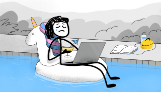

Ожидание vs реальность
Скажите привет Тиму Урбану. Это автор популярного блога «Wait but why» — например, по его TED статье о прокрас-тинации набрал 61 млн просмотров.
В 2013 году он написал другую статью о том, почему молодые и состоятель-ные люди (часто без каких-то видимых проблем) так несчастливы. В ней говорится о Люси, которая сейчас могла бы работать в IT. Ей 25 лет, она может себе позволить путешествовать, работать удалённо с нового макбука, а в свободное время монтировать тик-токи про своего кота — всего этого в оригинальном посте нет, но можно нарисовать себе примерно такой образ.
Хотя карьера Люси складывается неплохо, и родители девушки могли только мечтать о возможности рабо-тать откуда угодно, Люси всё равно недовольна. Если кратко, Тим Урбан объясняет эту неудовлетворенность разрывом между её ожиданиями и реальностью. Люси кажется, что стоит только подождать — и всё будет. А она вышла на плато и этого не происходит.
Чувства Люси можно сравнить, напри-мер, со сноубордом. Ты начинаешь кататься на маленькой горе, и у тебя получается — всё классно. А через несколько лет ты приезжаешь на нормальную гору. У тебя трясутся ноги, ты постоянно падаешь и выясняется, что ты так ничему толком и не научил-ся. Разочарование ещё сильнее подкрепляют завышенные ожидания. Ты же два года катаешься, а результата нет.
И что же? Отказаться от амбиций? Наоборот, Урбан советует вот что:
- Оставайтесь дико амбициозными. Ищите проекты, пытайтесь приме-нить себя везде, где получится.
- Но при этом не думайте, что вы особенные. Это придёт позже — с опытом.
- Не сравнивайте себя с другими. Кажется, что у остальных и трава зеленее, и сноуборд быстрее, но у них полно собственных проблем, которые вы не видите.